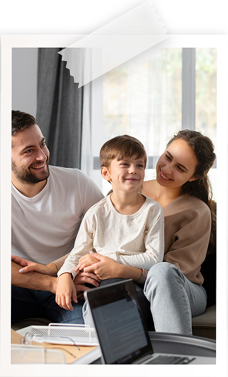

Philosophy


Successful therapy involves the creation of a safe and collaborative environment that serves as the foundation for exploring, understanding, and sometimes altering old patterns. I became a therapist because I believe in the human capacity to change, and I see my role as a facilitator of changes that improve one’s quality of life. I also acknowledge that change can be very difficult, even when we feel motivated to do so.
It is my hope that my clients leave therapy more content in their lives, with a greater awareness of themselves and others. I also hope my clients feel supported and empowered with the strength to change those things that can be changed and able to navigate more easily life’s avoidable and unavoidable challenges.
My orientation is primarily Cognitive Behavioral (CBT), within a systems framework. I use a CBT approach to help individuals recognize common negative thinking patterns that increase distress. The ability to look at challenging situations from a more neutral perspective allows an individual to respond to them more effectively and with greater clarity. A systems approach considers people in their larger contexts, examining how they are affected by and react to their environments.
Understanding the dynamic factors in the family system that impact how children experience their world helps to identify multiple points for intervention. This multi-pronged approach enables effective and durable shifts in behavior, resulting in more sustainable positive outcomes.
Ready to begin?
Contact me to schedule a consultation.
Contact Me